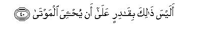

بسم الله الرحمن الرحيم
Sayyid Abul Ala Maududi - Tafhim al-Qur'an - The Meaning of the Qur'an
 75.
Surah Al Qiyama (The Resurrection)
75.
Surah Al Qiyama (The Resurrection)
The Surah has been so named after the word al-Qiyamah in the first verse. This is not only the name but also the title of this Surah, for it is devoted to Resurrection itself.
Although there is no tradition to indicate its period of revelation, yet there is in the subject matter of this Surah an internal evidence, which shows that it is one of the earliest Surahs to be sent down at Makkah. After verse 15 the discourse is suddenly interrupted and the Holy Prophet (upon whom be peace) told: "Do not move your tongue to remember this Revelation hastily. It is Our responsibility to have it remembered and read. Therefore, when We are reciting it, listen to its recital carefully. Again, it is Our responsibility to explain its meaning." Then, from verse 20 onward the same theme which was interrupted at verse 15, is resumed. This parenthetical passage, according to both the context and the traditions, has been interposed here for the reason that when the Angel Gabriel was reciting this Surah to the Holy Prophet, the Holy Prophet, lest he should forget its words later, was repeating them at the same moment. This in fact happened at the time when the coming down and receipt of Revelation was yet a new experience for him and he was not yet fully used to receiving it calmly. There are two other instances also of this in the Qur'an. First, in Surah Ta Ha the Holy Prophet (upon whom be peace) has been told: "And see that you do not hasten to recite the Qur'an before its revelation is completed to you." (v. 114). Then, in Surah Al-A'la, it has been said: "We shall enable you to recite:, then you shall never forget. (v. 6). Later, when the Holy Prophet became fully used to receiving the Revelation well, there remained no need to give him any such instruction. That is why except for these, three, there is no other instance of this in the Qur'an.
Most of the Surahs, from here till the end of the Qur'an, in view of their content and style, seem to have been sent down in the period when after the first seven verses of Surah Al-Muddaththir, revelation of the Qur'an began like a shower of rain:Thus, in the successively revealed Surahs Islam and its fundamental concepts and moral teachings were presented so forcefully and effectively in pithy, brief sentences and the people of Makkah warned so vehemently on their errors and deviations that the Quraish chiefs were utterly confounded. Therefore, before the next Hajj season came they held the conference for devising schemes to defeat the Holy Prophet (upon whom be peace) as has been mentioned in the Introduction to the Surah Al-Muddaththir above.
In this Surah, addressing thee deniers of the Hereafter, replies have been given to each of their doubts and objections, strong arguments have been given to prove the possibility, occurrence and necessity of the Resurrection and Hereafter, and also it has been pointed out clearly that the actual reason of the people's denying the Hereafter is not that they regard it as impossible rationally but because their selfish motives do not allow them to affirm it. At the same time, the people have been warned, as if to say: "The event, the occurrence of which you deny, will inevitably come: all your deeds will be brought and placed before you. As a matter of fact, even before any of you sees his record, he will be knowing fully well what he has done in the world, for no man is unaware of himself, no matter what excuses and pretenses he may offer to deceive the world and deceive himself in respect of his misdeeds."

In the name of Allah, the Compassionate, the Merciful.

[1-30] Nay,1 I swear by the Day of Resurrection and nay, I swear by the reproaching self.2 Does man think that We shall not be able to put his bones together?3 Why not? We have even the power to shape and restore his very finger-tips.4 But man desires that he may go on doing evil in future as well.5 He asks, "When is the Day of Resurrection to be?"6 When the eyes are dazzled7 and the moon is darkened and the sun and the moon are brought together,8 then the same man will say, "Whither to escape?" No, by no means! There will be no refuge whatever. Only before your Lord that Day shall be the place of rest. That Day man shall be told all his former and latter deeds.9 Nay, man knows his own self best, even though he may offer many excuses.10 O Prophet,11 do not move your tongue to remember this Revelation hastily. It is for Us to have it remembered and read. Therefore, when We are reciting it,12 listen to its recital carefully. Again, it is for Us to explain its meaning.13 -No, by no means!14 The fact is that you (people) love that which is hastily attainable (i.e. the world) and neglect the Hereafter.15 On that Day some faces shall be fresh,16 looking towards their Lord,17 and some faces shall be gloomy, thinking that a back breaking calamity is about to befall them. No, by no means!18 When the soul reaches the throat, and it is said, "Is there an enchanter to help?"19 and man thinks that it is the time of his departure from the world, and the leg is joined to the leg,20 that will be the Day of driving towards your Lord.
[31-35] But he neither affirmed (the Truth) nor prayed, but he belied turned away. Then he went to his kinsfolk, arrogantly.21 This sort of conduct behooves you and you alone. Yes, this sort of conduct behooves you and you alone!22

[36-40] Does man23 think that he will be left to himself to wander at will?24 Was he not a mere sperm-drop, which is emitted (in the mother's womb)? Then he became a blood-clot then Allah formed him and fashioned his limbs in proportion; then from it He made two kinds, male and female. Has He not then the power to give life to the dead?25
1To begin the discourse with "Nay" by itself indicates that the Surah was sent down to refute some argument which was already in progress. The theme that follows shows that the argument was about Resurrection and life after death, which the people of Makkah were denying and also mocking at it at the same time. This can be understood by an example. If a person only wants to affirm the truth of the Messenger, he will say: "By God, the Messenger has come with the truth." But if some people might be denying the truth of the Messenger, he in response would rejoin, thus: “Nay, by God, the Messenger has come with the truth." It would mean: "That which you say is not true. I swear that the truth is this and this."
2The Qur'an has mentioned three kinds of human self:
(1) Ammarah: the self that urges man to evil;
(2) Lawwamah: the self that feels repentant at doing wrong, thinking wrong and willing wrong and reproaches man for this; and the same is called Conscience in modern terminology; and
(3) Mumta'innah: the self that feels full satisfaction at following the right path and abandoning the wrong path.
Here. the thing for which. Allah has sworn an oath by the Resurrection (al- Qiyamah) and the self-reproaching Self, has not been mentioned, for the following sentence itself points it out. The oath has been sworn to stress the truth that Allah will certainly resurrect man after death and He has full power to do so. Now, the question arises: What is the relevance of swearing an oath by these two truths to this thing?
As for the Day of Resurrection, the reason of swearing by it is certainty. The whole system of the universe testifies that it is neither eternal nor everlasting. Its own nature tells that it has neither existed since eternity nor can last till eternity. Human intellect has never had any strong argument to support the baseless view that this ever changing world could have existed since ever and would last for ever. But as the knowledge of man about this world goes on increasing, ii goes on becoming more and more certain for man himself that this workhouse of life had a beginning in time before which it was not, and necessarily it has also an end in time after which it will not be. For this reason, Allah has sworn an oath by Resurrection itself on the occurrence of Resurrection, and this is an oath of the kind that we might swear addressing a skeptical person, who may be skeptical about his own existence, saying: "By you yourself, you exist, i.e., your own being itself testifies that you exist. "
But an oath by the Day of Resurrection is only an argument for the truth that this system will one day be upset. As for the truth that after that man shall be resurrected and called upon to account for his deeds and made to see the good or evil results thereof, another oath has been sworn by the self reproaching soul. No man exists in the world, who may not have a faculty called Conscience in him. This Conscience is necessarily conscious of the good and evil, and no :natter how perverted and degraded a man might be, his Conscience always checks him on doing evil and for not doing good irrespective of the fact whether the criterion of good and evil that he had set for himself might in itself be right or wrong. This is an express pointer that man is not merely an animal but a moral being. He naturally can distinguish good from evil; he regards himself as responsible for the good or the evil he does; and even if he might feel pleased suppressing the reproaches of his Conscience over the evil he has done to another, he, on the contrary, feels and demands from within that the other one who has done the same evil to him, must deserve punishment. Now, if the existence of a self-reproaching soul of this kind in man himself is an undeniable truth, then this truth too is undeniable that the same self-reproaching soul is an evidence of the life hereafter, which exists in man's own nature itself. For this demand of nature that man must be rewarded or punished for his good or evil deeds for which he himself is responsible, cannot be met in any other way than in the life hereafter. No sensible man can deny that if man becomes non existent after death, he will certainly be deprived of the rewards of his good deeds and escape the just and lawful punishment of many of his evil deeds. Therefore, unless one comes to believe in the absurd idea that a rational being like man has stumbled into an irrational system of the universe and a moral being like man has happened to be born in a world which basically has nothing to do with morality, he cannot deny the life hereafter. Likewise, the philosophy of the transmigration of souls also is no reply to this demand of nature, for if man goes on being born and reborn in this very world for the sake of being rewarded and punished for his moral acts, in every cycle of life he will perform some additional moral acts, which again will nerd to be rewarded and punished, thus making his account snore and snore lengthy and complicated in an endless way instead of being settled tidally and for good. Therefore, this demand of nature is fulfilled only in case man in this world should have only one life and then, after the whole human race has been brought to an end, there should be another life in which all acts of man should be judged and assessed rightly and justly and he should be fully rewarded or punished in consequence thereof. (For further explanation, see E.N. 30 of Surah Al-A'raf).
3The above two arguments, which have been presented in the form of the oaths, only prove two things. First, that the end of the world (i.e. the first stage of Resurrection) is a certainty; and second, that another life after death is necessary, for without it the logical and natural demands of man's being a moral being cannot be fulfilled; and this will certainly happen, for the existence of the Conscience in man testifies to it. Now, this third argument has been given to prove that life after death is possible. The people of Makkah who denied it, said again and again: "How can it be that the people who died hundreds of thousands of years ago, whose bodies have disintegrated into particles and mixed in the dust, whose bones decayed and were scattered away by the winds, some of whom were burnt to ashes, others devoured by the beasts of prey, still others drowned in the seas and swallowed by fish, the material constituents of their bodies should re-assemble and every man should rise up as the same person that he once was ten or twenty thousand years before? Allah has given its very rational and highly forceful reply in the form of this brief question: "Does man think that We shall not be able to put his bones together?" That is, "If you had been told that the scattered particles of your body would reunite of their own accord some time in the future, and you would come back to life by yourself with this very body, you would no doubt have been justified in regarding it as impossible. But what you have actually been told is that such a thing will not happen by itself, but Allah Almighty will do this. Now, do you really think that the Creator of the universe, Whom you yourself also regard as the Creator, would be powerless to do so?" This was such a question in answer to which nobody who believed in God to be the Creator of the universe; could say, neither then nor today, that even God Himself could not do this even if He so willed. And if a disbeliever says such a thing, he can be asked: How did God in the first instance make the body in which you at present exist, by gathering its countless particles together from the air, water and earth and many other places you know not what, and how can you say that the same God cannot gather its constituent parts together once again?
4That is, "Not to speak of building up your skeleton once again by gathering together the major bones? We are able to make whole the most delicate parts of your body, even your finger tips, as they used to be before."
5In this brief sentence the real disease of the deniers of the Hereafter has been clearly diagnosed. What makes them deny the Hereafter is not, in fact, their regarding the Resurrection and Hereafter as impossible but they deny it because acceptance of the Hereafter inevitably imposes certain moral restrictions on them, which they detest. They desire that they should continue roaming in the world at will as they have been roaming before. They should have full freedom to go on committing whatever injustice, dishonesty, sin and wickedness that they have been committing before, and there should be no deterrent to obstruct their freedom and to warn them that one day they will have to appear and render an account of their deeds before their God. Therefore, it is not their intellect which is hindering them from believing in the Hereafter but their desires of the self.
6This question was not put as a question but derisively and to deny Resurrection, That is, they did not want to ask when Resurrection would take place but asked mockingly: "What has happened to the day with which you are threatening us. When will it come?"
7Literally, the words bariq al-basaru mean dazzling of the eyes by lightning, but in the Arabic idiom these words do not specifically carry this meaning only but are also used for man's being terror-stricken and amazed, or his being confounded on meeting with an accident suddenly and his eyes being dazed at some distressing sight before him. This subject has been expressed at another place in the Qur'an, thus; "Allah is only deferring their case to the Day when the eyes shall stare with consternation." (Ibrahim: 42).
8This is a brief description of the chaotic condition of the system of the universe, that will prevail in the first stage of Resurrection. The darkening of the moon and the joining of the moon and the sun together can also mean that not only will the moon lose its light, which is borrowed from the sun, but the sun itself will become dark and both will become devoid of light similarly. Another meaning can be that the earth will suddenly start rotating in the reverse order and on that day both the moon and the sun will rise simultaneously in the west. And a third meaning can be that the moon will suddenly shoot out of the earth's sphere of influence and will fall into the sun. There may possibly be some other meaning also of this which we cannot understand today.
9Bima qaddama wa akhkhara is a very comprehensive sentence, which can have several meanings and probably all are implied;
(1) That man on that Day will be told what good or evil he had earned in his worldly life before death and sent forward for his hereafter, and also informed what effects of his good or evil acts he had left behind in the world, which continued to work and to influence the coming generations for ages after him;
(2) that he will be told everything he ought to have done but which he did not do, and did what he ought not to have done;
(3) that the full datewise account of what he did before and what he did afterwards will be placed before him;
(4) that he will be told whatever good or evil he had done as well as informed of the good or the evil that he had left undone.
10That is, the object of placing man's record before him will not be to inform the culprit of his crimes, but this will be done because the demands of justice are not fulfilled unless the proof of the crime is produced before the court; otherwise everyman fully well knows what he actually is. For the sake of self- knowledge he does not need that another one should tell him what he is. A liar can deceive the whole world but he him self knows that he lies. A thief can devise a thousand devices to conceal his crime but he himself is aware that he is a thief. A person involved in error can present a thousand arguments to assure the people that he is honestly convinced of the disbelief, atheism or polytheism, which he professes and follows, but his own conscience is never unaware of why he persists in that creed and what, in fact, prevents him from understanding and admitting its error and falsity. An unjust, wicked, dishonest, unmoral and corrupt person can even suppress the voice of his own conscience by inventing one or another excuse so that it may stop reproaching him and should be satisfied that he is doing whatever he is doing only because of certain compulsions, expediencies and genuine needs, but despite this he has in any case the knowledge of what wrong he has committed against a certain person, how he has deprived another of his rights, how he deceived still another and that unlawful methods he used to gain what he has gained. Therefore, at the time when one appears in the Court of the Hereafter, every disbeliever, every hypocrite, every wicked person and culprit will himself be knowing what he has done in the world and for what crime he stands before his God.
11The whole passage from here to "Again, it is for Us to explain its meaning", is a parenthesis, which has been interposed here as an address to the Holy Prophet (upon whom be peace). As we have explained in the Introduction above, in the initial stage of the Prophethood when the Holy Prophet (upon whom be peace) was not yet fully used to receiving the Revelation, he was afraid when Revelation came down to him whether he would be able to remember exactly what the Angel Gabriel (peace be on him) was reciting to him or not. Therefore, he would try to commit to memory rapidly what he heard from the Angel simultaneously. The same thing happened when Gabriel was reciting these verses of Surah Al-Qiyamah. Therefore, interrupting what was being revealed, the holy Prophet was instructed to the effect: "Do not try to memorize the words of the revelation, but listen to it attentively and carefully. It is Our responsibility to enable you to remember it by heart and then to recite it accurately. Rest assured that you will not forget even a word of this Revelation, nor ever commit a mistake in reciting it!
After this instruction the original theme is resumed with "No, by no means! The fact is . . . " The people who are not aware of this background regard these sentences as wholly unconnected with the context when they see them interposed here. But one does not see any irrelevance when one has understood their background. This can be understood by an example. A teacher seeing the inattentiveness of a student in the course of the lesson might interrupt the lesson to tell him, "Listen to me carefully", and then resume his speech, This sentence will certainly seem to be irrelevant to those who might be unaware of the incident and might read the lesson when it is printed and published word for word, But the one who is aware of the incident because of which this sentence was interposed, will feel satisfied that the lesson has been reproduced verbatim and nothing has been increased or decreased in it in the process of reproduction.
The explanation that we have given above of the interpolation of the parenthesis in the present context, is not merely based .on conjecture, but it has been explained likewise in the authentic traditions. Imam Ahmad, Bukhari, Muslim, Nasa'i, Tirmidhi Ibn Jarir, Tabarani, Baihaqi and other traditionists have related with authentic chains of transmitters a tradition from Hadrat `Abdullah bin `Abbas, saying that when the Qur'an was revealed to the Holy Prophet (upon whom be peace), he would start repeating the words of the Revelation rapidly as the Angel Gabriel recited them, fearing lest he should forget some part of it later. Thereupon, he was instructed: "Do not move your tongue to remember this Revelation hastily ... The same thing has been related from Sha`bi, Ibn Zaid, Dahhak, Hasan Basri, Qatadah, Mujahid and other early commentators.
12Although it was Gabriel (peace be on him) who recited the Qur'an to the Holy Prophet (upon whom be Allah's peace), since he recited it on behalf of Allah and not on his own behalf, Allah said: "When We are reciting it."
13This gives the feeling, and some early commentators also have given expression to the same, that probably in the beginning the Holy Messenger of Allah used to ask of the Angel Gabriel the meaning of a verse or a word or a command of the Qur'an even in the very midst of the Revelation itself. Therefore, the Holy Prophet was not only given the instruction that he should listen quietly to Revelation when it came down to him, and assured that its each word would be preserved in his memory precisely, and he would be enabled to recite the Qur'an exactly as it was revealed, but at the same time it was also promised that he would be made to understand the meaning and intention of each command and each instruction of Divine Revelation.
This is a very important verse, which proves certain fundamental concepts which if understood well, can protect one against the errors which some people have been spreading before as they are spreading them today.
First, it clearly proves that the Holy Prophet (upon whom be peace) did not receive only the Revelation which is recorded in the Qur'an but besides that he was also given such knowledge by revelation as is not recorded in it. For, if the meaning and intention of the commandments of the Qur'an, its allusions, its words and its specific terms, which the Holy Prophet was made to understand, had been recorded in the Qur'an, there was no need to say that it was also Allah's own responsibility to explain its meaning, for it should then be there in the Qur'an itself. Hence, one will have to admit that the explanations which were given by Allah of the meanings of the contents of the Qur'an, were in any case in addition to the words of the Qur'an. This is another proof of the secret Revelation to the Holy Prophet which the Qur'an provides. (For further proofs of this from the Qur'an, see our book Sunnat ki A ni Haithiyat pp. 94-95 and pp. 118-125).
Secondly, the explanation of the meaning and intention of the Qur'an and of its commandments that was given by Allah to the Holy Prophet (upon whom be peace), was given for the purpose that he should make the people understand the Qur'an by his word and deed according to it and teach them to act on its Commands. If this was not the object, and the explanation was only given so that he may restrict its knowledge to himself, it was then an exercise in futility, for it could not help in any way in the performance of the prophetic duties. Therefore, only a foolish person could say that this explanatory work had no legal value at all. Allah Himself has said in Surah An-Nahl: 44: "And O Prophet, We have sent down this Admonition to you so that you may make plain and explain to the people the teaching which has been sent for them." (For explanation, see E.N. 40 of Surah An-Nahl). And at four places in the Qur'an Allah has stated that the Holy Prophet's task was not only to recite the verses of the Book of Allah but also to teach the Book. (Al-Baqarah: 129,.151, Al-Imran: 164, Al-Jumu`ah: 2. We have fully explained all these verses at pp. 74-77 of Sunnat ki A'ini Haithiyat After this, how can a believer of the Qur'an deny that the Qur'an's correct and authoritative, as a matter of fact official, explanation is only that which the Holy Prophet (upon whom be peace) has given by his word and deed, for it is not his personal explanation but the explanation given by the God Who sent down the Qur'an to him. Apart from this, or leaving this aside any person who explains a verse, or a word, of the Qur'an according to his personal whim and desire, commits a boldness which no true believer could ever commit.
Thirdly, even if a person has read the Qur'an only cursorily, he cannot help feeling that there are many things in it whose actual meaning and intention cannot be understood by a reader of Arabic only from the words of the Qur'an, nor can he know how to act on the commands enjoined in them. Take the word salat for instance; The act which has been most stressed by the Qur'an after the affirmation of faith is the act of salat. But no man only with the help of the dictionary can determine its actual meaning. At the most what one can understand from the way it has been repeatedly mentioned in the Qur'an is that this Arabic word has been used in some special terminological sense, and it probably implies some special act which the believers are required to perform. But merely by reading the Qur'an no reader of Arabic can determine what particular act it is, and how it is to be performed. The question: If the Sender of the Qur'an had not appointed a teacher from Himself and explained to him the precise and exact meaning of this term and taught him the method in full detail of implementing the command of salat, could there be even two Muslims in the world who would have agreed on one method of acting on the command of salat just by reading the Qur'an? The reason why Muslims have been performing salat in one and the same way, generation after generation, for more than 1500 years, and the way millions and millions of Muslims are carrying out the command of salat similarly in every part of the world, is that Allah had not only revealed the words of the Qur'an to His Messenger but had also explained to him fully the meaning of those words and the same meaning he taught to the people who accepted the Qur'an as the Book of Allah and him as the Messenger of Allah.
Fourthly, the means of knowing the explanation of the words of the Qur'an that Allah taught His Messenger and the Messenger his Ummah by word and deed, is none but the Hadith and the Sunnah, The Hadith implies the traditions which the earliest followers passed on to the later generations about the sayings and acts of the Messenger on sound authority, and the Sunnah implies the way of life which became prevalent in the individual and collective life of the Muslims by the Holy Messenger's oral and practical teaching, the details of which have been bequeathed by the former to the latter generations by reliable traditions as well as seen .by them practically in the life of the earliest followers. The person who refuses to acknowledge this means of knowledge, in fact, says that Allah after taking the responsibility of explaining the meaning of the Qur'an to His Messenger had, God forbid, failed to fulfill His promise. For this responsibility had not been taken to explain the meaning only to the Messenger in his personal capacity but for the purpose that the Ummah also be made to understand the meaning of the Divine Book through the agency of the Messenger. And as soon as the Hadith and the Sunnah are denied to be a source of law, it virtually amounts to saying that Allah has failed to carry out His responsibility. May Allah protect us froth such blasphemy! To the one who argues that many people had also fabricated Hadid, we would say that fabrication of Hadid itself is a major proof of the fact that in the beginning the entire Ummah gave the sayings and acts of the Holy Messenger (Upon whom be Allah's peace) the status of law, otherwise why should the people who wanted to spread error have fabricated false ,Hadith. For only those coins are counterfeited which are current in the bazaar; nobody would print paper currency which had no value in the bazaar. Then, those who say such a thing perhaps do not know that this Ummah had seen to it from the very beginning that no falsehood was ascribed to the holy man whose sayings and acts had the status of law, and as the danger of ascribing false things to him increased, the well-wishers of the Ummah made greater and still greater efforts to distinguish the genuine from the counterfeit. The science of distinguishing the genuine from the false traditions is a unique science invented and developed only by the Muslims. Unfortunate indeed are those who without acquiring this science are being misled by the western orientalists to look upon the Hadith and the Sunnah as un-authentic and un-reliable and do not realize how grievously they are harming Islam by their foolhardiness.
14The theme is again resumed from where it was interrupted by the parenthesis. "By no means" implies; "You deny the Hereafter not because you regard the Creator of the universe as helpless to bring about Resurrection and raise the dead, but because of this and this other reason."
15This is the second reason for denying the Hereafter, the first being the one mentioned in verse 5 above, saying: Since man wants to avoid the moral restrictions which are inevitably imposed by the belief in the Hereafter, his selfish motives, in fact, urge him to deny the Hereafter, and then he tries to present arguments in order to rationalize his denial. Now, the second reason being presented is that the deniers of the Hereafter are narrow-minded and shortsighted; for them only those results are all important, which appear in this world, and they do not give any importance to those effects which will appear in the Hereafter. They think that they should expend all their labor and effort in attaining whatever benefits, pleasures or joys they can attain here, for if one attained this, one attained everything, no matter what evil end this might lead to in the Hereafter. Likewise, they think that the loss or trouble or grief that can afflict one here is a thing that one must avoid, no matter how great a reward it might earn one in the Hereafter if one endured it here. They are only interested in the cash bargain. For the sake of as remote a thing as the Hereafter they can neither abandon a profit nor suffer a loss today. With this mode of thought when they discuss the question of the Hereafter rationally, it is not true rationalism but a mode of thinking because of which they are resolved not to acknowledge the Hereafter in any case even if their conscience might be crying froth within that the arguments for the possible occurrence and necessity of the Hereafter given in the Qur'an are highly rational and their own reasoning against it is very weak.
16"Some faces will be fresh"; will be beaming with joy and delight, for the Hereafter which they had believed in, will be before them precisely accordingly to their belief. Thus, when they see the Hereafter for the sake of which they had given up the unlawful benefits of the world and suffered the lawful losses, actually established before their very eyes, they will have the satisfaction that they had trade the correct decision about their way of life, and the tithe had come when they would enjoy its best and plentiful fruits.
17Some commentators have understood this allegorically. They say that the words "looking towards someone" are used idiomatically for having expectations from some one, awaiting his decision and hoping for his mercy and kindness: so much so that even a blind person also says that he is looking towards some one in the hope to see how he helps him. But in a large number of the Ahadith the commentary that has been reported of it from the Holy Prophet (upon whom be peace) is that on the Hereafter the illustrious servants of Allah will be blessed with the vision of their Lord. According to a tradition in Bukhari: "You will openly see your Lord." Muslim and Tirmidhi have related on the authority of Hadrat Suhaib that the Holy Prophet said: "When the righteous people enter Paradise. Allah will ask them: Do you want that I should bless you with something more? They will answer: Have You not made our faces bright: Have You not admitted us into Paradise and saved us from Hell? Thereupon, Allah will remove the curtain and none of the blessings that they had been blessed with until then will be dearer to them than that they should be blessed with the vision of their Lord" And this very reward is the additional reward about which the Qur'an says: "Those who have done excellent works, will get excellent rewards, and even something in addition to that." (Yunus: 26) Bukhari and Muslim have related, on the authority of Hadrat Abu Sa'id Khudri and Hadrat Abu Hurairah: "The people asked: O Messenger of Allah, shall we see our Lord on the Day of Resurrection? The Holy Messenger replied: Do you find any difficulty in seeing the sun and the moon when there is no cloud in between? They said that they did not. The Holy Messenger said: Likewise, you will see you Lord." Another tradition bearing almost on the same subject has been reported in Bukhari and Muslim from Hadrat Jarir bin `Abdullah. Imam Ahmad, Tirmidhi, Daraqutni, lbn Jarir, Ibn AIMundhir. Tabarani, BaihaqI. Ibn Abi Shaibah and some other traditionists have related, with a little variation in wordings a tradition from Hadrat `Abdullah bin 'Umar, saying: "The man of the lowest rank among the dwellers of Paradise will see the vastness of his kingdom up to a distance covered in two thousand years, and the people of the highest rank among them will see their Lord twice daily. Then, the Holy Prophet recited this verse: `On that Day some faces shall be fresh, looking towards their Lord'." A tradition in Ibn Majah from Hadrat Jabir bin 'Abdullah is to the effect: "Allah will look towards them, and they will look towards Allah. Then, until Allah hides Himself from them, they will not pay attention to any other blessing of Paradise, and will continue to look towards Him." On the basis of this and many other traditions, the followers of the Sunnah almost unanimously understand this verse in the meaning that in the Hereafter the Dwellers of Paradise will be blessed with the vision of Allah, and this is supported by this verse of the Qur'an too: "Nay, surely on that Day they (the sinners) shall be kept away from their Lord's vision." (AI-Mutaffifin: 15). From this one can automatically conclude that this deprivation will be the lot of the sinners. not of the righteous.
Here, the question arises how can man ever see God? A thing is seen when it is there in a particular direction, place, form and color, and the rays of light are reflected from it to the eye of man and its image is conveyed from the eye to the sight area in the brain. Is it ever conceivable with regard to the Being of Allah, Lord of the Universe, that man would be able to see Him in this way? But this question, in fact, springs from a grave misunderstanding. It does not take into account the distinction between two things: the essence of seeing and the specific form of the occurrence of the act of seeing with which we are familiar in the world. The essence of seeing is that the seer should be characterized by the power of sight: he should not be blind, and the thing to be seen should be manifest to him, not hidden from him. But in the world what we experience and observe is only the specific form of seeing in which a man or an animal practically sees something, and for this it is necessary that the seer should have an organ called the eye in his body, the eye should have the power of sight, it should have a physically bounded, colored object before it, which should reflect rays of light to the eye, and the eye should be able to receive its image. Now, if a person thinks that the practical demonstration of the essence of seeing can take place only in the form with which we are familiar in the world, he would be only showing the narrowness of his own mental outlook; otherwise there can be in the Kingdom of God countless ways of seeing, which we cannot even imagine. The one who disputes this should tell us whether his God is seeing or blind. If He is seeing and sees His whole Universe and everything in it, does He see all this with an organ called the eye with which men and animals see things in the world, and does the act of seeing issue forth from Him as it issues forth from us? Obviously, the answer to this is in the negative, and when it is so, why should a sensible man find it difficult to understand that in the Hereafter the dwellers of Paradise will not see Allah in the specific form in which man sees something in the world, but there nature of seeing will be different, which we cannot comprehend here. The fact is that it is even more difficult for us to understand the nature of the Hereafter precisely and accurately than it is for a two-year-old child to understand what matrimonial life is, whereas he himself will experience it when he grows up.
18The phrase "by no means" relates to the context, and means: "You are wrong in thinking that you will be annihilated after death and you will not return to your Lord.”
19The word raqin in the original may he derived from ruqayyah, which means resort to charming, enchanting and exercising, and also from raqi, which means ascending. In the first case, the. Meaning would be: "At last, when the attendants of the patient are disappointed with every remedy and cure, they will say: "Let us at least call in an enchanter, who may save him;" in the second case, the meaning would be: "At that tune the angels will say: which angels are to take his soul: the angels of punishment or the angels of mercy?" In other words, at that very time the question will be decided in what capacity the dying one is entering the Hereafter; if he is a righteous person, the angels of mercy will take him, and if he is wicked, the angels of mercy will keep away and the angels of punishment will seize him and take him away.
20Some commentators have taken the word saq (leg, shank) in its literal meaning, thereby implying that at death one lean leg will join the other lean leg; some others have taken it metaphorically in the sense of difficulty, vehemence and hardship so as to mean: At that tune one affliction will be joined with another affliction, one of being separated from the world and all its enjoyments, and the other of being seized and taken to the Hereafter as a culprit, and this will be experienced by every disbeliever, hypocrite and sinner.
21It means that the one who was not prepared to believe in the Hereafter, heard all that has been described in the above verses; yet he persisted in his denial, and hearing these verses went back to his household, arrogantly. Mujahid, Qatadah and Ibn Zaid say that this person was Abu Jahl. The words of the verse also indicate that it was some particular person, who adopted such a conduct after having heard the above-mentioned verse of Surah Al-Qiyamah.
The words, "He neither affirmed the Truth nor offered the Prayer", are particularly noteworthy. They clearly show that the first and necessary demand of acknowledging the truth about Allah and His Messenger and Book is that one should perform the Prayer, The occasion and time to carry out the other injunctions of the Divine Shari 'ah come later but the Prayer time approaches soon after one has affirmed the faith, and then it becomes known whether what one has affirmed with the tongue was really the voice of one's heart, or it was only a puff of the wind which one sent out from one's mouth in the form of words.
22The commentators have given several meanings of the word aufa laka: shame on you, may you perish, woe to you, may you hasten to your doom. But in our opinion, in view of the context, the most appropriate meaning is that which Hafiz Ibn Kathir has given in his commentary: "When you have had the boldness to disown your Creators then it only behoves a person like you to persist in the sort of conduct you display." This is the same sort of sarcastic remark as occurred in Surah Ad-Dukhan: 49 above. While meting out punishment to the culprit in Hell, it will be said: "Taste this: a mighty and honorable man that you are!"
23Now, in conclusion, the same theme is being repeated with which the discourse began Life-after-death is necessary as well as possible.
24The word suda when used with regard to a camel implies a camel who is wandering aimlessly, grazing at will, without there being anybody to look after him. Thus, the verse means: "Does man think that he has been left to himself to wander at will as if his Creator had laid no responsibility on him, had imposed no duty on him, had forbidden nothing to him, that at no time in future he would be required to account for his deeds'?" This same theme has been expressed in Al Mu'minun: 115 thus: "On the Day of Resurrection, Allah will ask the disbelievers: 'Did you think that We had created you without any purpose, and that you would never be brought back to Us?" At both these places the argument for the necessity of the life hereafter has been presented as a question. The question means: Do you really think that you are no more than mere animals? Don't you see the manifest difference between yourself and the animal? The animal has been created without the power of choice and authority, but you have been blessed with the power of choice and authority; there is no question of morality about what the animal does, but your acts are necessarily characterized by good and evil. Then, how did you take it into your head that you had been created irresponsible and unanswerable as the animal has been? Why the animal will not be resurrected, is quite understandable The animal only fulfilled the fixed demands of its instinct it did not use its intellect to propound a philosophy; it did not invent a religion; it did not snake anyone its god nor became a god for others; it did nothing that could be called good or bad; it did not enforce a good or bad way of life, which would influence others, generation after generation, so that it should deserve a reward or punishment for it. Hence, if it perished to annihilation, it would be understandable, for it could not be held responsible for any of its acts to account for which it might treed to be resurrected. But how could you be excused from life after-death when right till the time of your death you continued to perform moral acts, which your own intellect judged as good or bad and worthy of reward or punishment? Should a man who killed an innocent person and then fell a victim to a sudden accident immediately after it, get off Scot-free and should never be punished for the crime of murder he committed? Do you really feel satisfied that a man, who sowed corruption and iniquity in the world, which entailed evil consequences for mankind for centuries after him, should himself perish like an insect; or a grasshopper, and should never be resurrected to account for his misdeeds, which corrupted the lives of hundreds of thousands of human beings after him? Do you think that the man, who struggled throughout his life for the cause of truth and justice, goodness and peace, and suffered hardships for their sake, was a creation of the kind of an insect, and had no right to be rewarded for his good acts?
25This is an argument for the possibility of life-after-death. As for the people who believe that the whole act of creation, starting from the emission of a sperm-drop till its development into a perfect man, is only a manifestation of the power and wisdom of Allah, they cannot in fact refute this argument in any way, for their intellect however shamelessly and stubbornly they might behave, cannot Refuse to admit that the God Who thus brings about man in the world, also has the power to bring the same man into being once again. As for those who regard this expressly wise act only as a result of accident, do not in fact have any explanation to offer, unless they are bent upon stubbornness, how in every part and in every nation of the world, from the beginning of creation till today, the birth of boys and girls has continuously been taking place in such proportion that at no time it has so happened that in some human population only males or only females might have been born and there might be no possibility of the continuation of the human race. Has this also been happening just accidentally? To make such an absurd claim one Should at least be so shameless as to come out one day with the claim that London and New York, Moscow and Peking, have come into existence just accidentally. (For further explanation, see E.N.'s 27 to 30 of Surah Ar-Rum, E.N. 77 of AshShura).
There are several traditions to show that whenever the Holy Prophet recited this verse, he would sometimes respond with bala (why not!), sometimes with Subhanaka Allahumma fa-bala (Glorified are You, O Allah, why not!) and sometimes with Subhanaka fa-bala or Subhanaka wa-bala. (Ibn Jarir, Ibn Abi Hatim, Abu Da'ud). Abu Da'ud contains a tradition from Hadrat Abu Hurairah, saying that the Holy Prophet said: "When in Surah At-Tin, you read the verse; Alais-Allahu bi-ahkam-il-Hakimin ("Is not Allah the greatest Ruler of all?"), you should respond to it, saying: Bala wa ana `ala dhalika min-ash-shahidin (Why not? I am of those who bear witness to this"). And when you read verse: Fa-bi ayyi ,hadith-in ba `da hu yu minun ("Now, what message is there after this (Qur'an) in which they will believe?" of Surah Al-Mursalat, say: Amanna billah (We believed in Allah), Traditions on this subject have been related also by Imam Ahmad Tirmidhi, lbn al-Mundhir, lbn Marduyah, Baihaqi and Hakim.